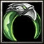
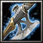
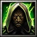
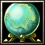
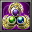
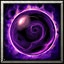

|
Archimonde
|

|

|
-
|
Archimonde has returned to this world to conquer it
with the help of his Burning Legion. Travel to Outland,
find and defeat him to protect Azeroth.
|

|
Dragon Slayer
|

|

|
-
|
Lately there has been some harassment by an evil Red
Dragon that recently appeared in the region. The creature
has caused serious damage to the defenses of Nethergarde
Citadel and now the wizards there have had enough!
There is a substantional reward to the hero who kills
the dragon and returns its heart to the Archmage of
Nethergarde.
|

|
Golem Factory
|

|

|
|
The Engineers of Ironforge have discovered some very
interesting blueprints in the city´s library: apparently
there seems to be a long abandoned and forgotten Golem
Factory somewhere under the city. This subject has
drawn the Dwarf King´s attention since Golems would
be an invaluable weapon against the increasing Undead
threat. King Magni Bronzebeard requires brave adventurers
to travel into the unexplored corridors deep under
the city, and if the rumor is true, bring a Battle
Golem to him as a proof of the factory´s existence!
|

|
Search for Muradin
|
|

|
|
Although it may be a suicide mission, the High King
of the Dwarves requests that you travel to Icecrown
and find out what happened to Muradin Bronzebeard,
the High King´s brother. Find the Dwarf and, should
he still live, escort safely him back to Ironforge!
|

|
Crusade
|

|

|
|
The time has come to take countermeasures against the
increasing threat caused by the Scourge ! To prevent
another cataclysm like in Lordaeron, King Anduin Wrynn
and the Order of the Silver Hand have called out a
Crusade against the Undead. Heros throughout the land
are called for to hunt down and destroy 5 Undead Heros
to avenge the death of legendary Sir Uther Lightbringer
and the downfall of the Order of the Silver Hand in
Lordaeron!
|

|
Druid Spell
|

|

|
-
|
The City of Darnassus is flourishing as hoped. However,
there seems to be a problem with the Night Elf housings
around the new World Tree. They are somehow falling
apart. Apparently this seems to be a side-effect of
the World Tree´s growing. Tyrande needs a special
Spell from the Druids of the Talon to enhance the structures
and shield them from the World Tree´s damaging magic.
She requires a Hero to travel to the Barrow Dens in
Ashenvale, find the druids and recover the Spell for
her. Although this is only a small running job, there
will be a reward for the Hero´s efforts to help the
Night Elves.
|

|
The World Tree
|

|

|
|
Ever since the destruction of the Demon Archimonde
near the World Tree, its regeneration has somehow been
strange. The Arch-Druid Furion suspects some kind of
corruption of the magical waters the World Tree is
feeding from...
Since the dispelling of demonic magicks
is the speciality of the Paladins of the Silver Hand,
Furion needs their help. Someone must seek the head
of their Order who is currently in Nethergarde Citadel
in Azeroth and get a sample of blessed water from him.
Pouring the blessed water into the Well of Eternity
should dispel any remnants of demonic corruption in
it.
|

|
Moon Stones
|
|

|
|
During an experiment with the newly discovered Moon
Stones, there has been an accident. The effect of the
Moon Stone somehow prolongued the Eclipse to an incredible
length. Tyrande has tried many spells to cancel the
eclipse but with no success. She believes that with
the help of the Arch-Sorceress Jaina Proudmoore, she
could dispel the eclipse and also enhance the moon
stones so that such an accident does not occur again.
The mission is simple: travel to Theramore, and let
Jaina enhance the moon stone Tyrande gave you. Afterwards
return to it to Tyrande and receive a small reward
for helping the Night Elves !
|

|
Demon Blood
|
|

|
|
After the Legion´s defeat on Kalimdor, the Night Elves
seem to have overlooked something. There is still a
defiled Fountain somewhere in Fellwood, probably the
source of the Warsong Clan´s former corruption. To
prevent other creatures to drink from it, Furion asks
you to travel to the nearby Felwood Forest, find the
Defiled Fountain and destroy it. But be on your guard,
since there seem to be remnants of the Dark Legion´s
strike force that the Night Elves have not yet eliminated
!
|

|
Durotar Law Code
|

|

|
-
|
The Orcish nation of Durotar is prospering well. Under
the guidance of Warchief Thrall, they have established
a council of elders that is responsible for establishing
order and laws among the hot-headed Orcs. Although
the Night Elves and Humans already have written codes
of law, this is something totally new for the young
nation of Orcs. Thrall promised to keep the Night Elves
informed about the progress of Durotar´s legislative
acts. Since his former running pet, Rexxar, has moved
to the wilds again, Thrall needs a new errand boy.
Your Hero has to take the Code of Laws tome and take
it to Tyrande on Teldrassil Isle. Afterwards you can
return to Thrall and claim you payment for the job.
|

|
Harpy Menace
|

|

|
|
The Tauren have constantly been harassed by Harpies
and Centaurs since they moved to Mulgore. Now a scout
has discovered one of the Harpies´ Queens. Cairne
believes that if she was destroyed, the Harpies would
at last be silenced. He needs a strong Hero to travel
to the nearby Stonetalon Mountains, find the Harpy
Queen and dispose of her as she deserves. Return afterwards
her heart to Cairne as a proof of the Mission success
and claim your reward ! (*ugh*)
|

|
Arena Contest
|

|

|
|
Rexxar and the Stonemaul Ogres declare their Arena
officially as open ! For the first warrior to beat
Level 9 of the Gauntlet Arena, Rexxar has announced
a special prize, apart from the items that may be dropped
in the Arena fights. Beat Level 9 of the Gauntlet and
show Rexxar the Stonemaul Arena Master Belt. He will
then reward your Hero with something special.
|

|
Centaur Khans
|

|

|
|
The Pandaren Brewmaster, Chem Stormstout, has recently
arrived in Mulgore with interesting news from his travel
in the south. There seems to be an increased movement
of the centaurs. They apparently seem to have their
seasonal fights for who is to be the new Supreme Centaur
leader. The Tauren see their opportunity to strike
a blow at the centaurs in order to lower their battle
morale and cause confusion among them. Cairne and Chem
will reward any Hero who kills all 7 Centaur Khans
in the southern part of the Barrens.
|

|
Demigod´s Remnants
|

|

|
-
|
The Faceless Ones of Azjul-Nerub have drawn the Lich
King´ interest in them. He wants them as part of the
scourge, but he needs more magic power in order to
control them. Anub´Arak has received word from Kel´Thuzad
that the Lich King´s power could be increased to that
extent with a special ritual. The Lich will however
need some items first to unravel the spell. The ancient
Night Elves´ Demigod, Cenarius, lies buried somewhere
in Ashenvale Forest. First, your Hero must travel to
Ashenvale and find a corpse probe of the dead creature.
Afterwards take it to the Sunwell Grove in the Silvermoon
Ruins where Kel´Thuzad will await your arrival.
|

|
Demigod´s Horn
|

|

|
|
The next step to unravel Kel´Thzad´s spell requires
the ancient Artifact known as the Horn of Cenarius.
Fortunately as it is, the Horn seems to be guarded
only by a few creatures and is vulnerable to theft.
But in order to remove it from the pedestal that magically
holds it, you need a special totem that Kel´Thuzad
has created. The mission is simple: Sneak with the
Lich´s relic to the Horn in Ashenvale Forest, destroy
the Spirits who guard the Horn and afterwards return
the Horn to Kel´Thuzad.
|

|
Lich King´s Order
|
|

|
|
After having enabled the Lich King to control the the
mysterious Faceless Ones, the time has come to unravel
the Scourge´s Wrath. The Quest is as hard as easy
it is to describe it: you are to destroy one Nation´s
Capital (Tier 1, 2 or 3 Town Hall or a or a Demigod
Temple). Hiring Faceless Ones in Draktharon Keep (Anub´Arak)
might be clever in order to accomplish this difficult
task. After you complete your Quest, return to Arthas
and claim your reward !
|

|
The Burning Legion
|
|
|
|
The Lich King will now have his revenge on his original
creator Kil'jaeden who is still active in the Outland
area. The Lich King already betrayed his former master
and creator but now it is time to act and to fight
the Burning Legion. Use the help of the Draenei to
attack Kil'jaeden and steal his Orb and bring it back
to the Lich King. Note that you do not have to kill
Kil'jaeden since he is pretty strong.
|

|
Dark Portal
|

|

|
-
|
The Orcish warriors are the fiercest warriors known
and they would be a valuable addition to the Forsaken
Army. The Dark Lady Sylvanas has devised a plan to
enslave the unsuspecting Orcs and turn them into the
undead. To realize this idea, it will take several
steps. At first, Sylvanas needs the Life essence of
a Nether Drake. Your Hero needs to travel to Nethergarde
Citadel and summon a Nether Drake Hatchling through
the Dark Portal there. Afterwards return the creature
to Sylvanas in the Undercity and claim your reward!
|

|
Stormreaver Hermit
|
|

|
|
After having captured the Nether Drake, the next step
is to get a corpse probe of a dead orc. In Durotar,
there is a Stormreaver Hermit who makes forbidden experiments
with Orcish corpses. Sylvanas wants your Hero tage
the bag of Gold, travel to Durotar, find the Warlock
and buy a corpse probe from him. Afterwards return
with the cadaver to the Undercity.
|

|
The Silver Hand
|
|

|
|
After having added the Orcs as part of the Forsaken,
Sylvanas wants revenge on the Paladins of the Silver
Hand who constantly hunt the Undead and cause the most
dangerous threat for the Forsaken at the moment. There
will be a bounty for the Hero who first kills 5 Paladins
of the Silver Hand. However facing one of them is very
dangerous, especially for the undead. Prepare yourself
well !
Hint: no Human genocide is allowed !
|

|
Legendary Items
|
|

|
|
Now it is time to craft some powerful items to protect
the base of the Forsaken in Azeroth. Slyvanas knows
how to craft items but needs some references to create
really powerful items. You must kill at least two Bosses
and bring their legendary artifacts to Sylvanas as
references, so she can create powerful items and protect
her city. Note that there is a limited number of bosses
in the map and other players might pick up legendary
artifacts as well.
|
|
|
Tomb of Sargeras
|

|

|
-
|
After having returned from Outland, Illidan, Kael and
Vashj have devised a new plan to strike at the Lich
King. However, Lord Illidan needs a special Artifact
which he can only get from his Master, Kil´Jaeden
himself. He is currently somewhere in the Tomb of Sargeras,
for reasons unknown. Your Hero must travel to the Tomb
of Sargeras near the Maelstrom, find Kil´Jaeden, get
the Artifact from him and return it to Illidan. Kil´Jaeden
may be somewhat be aroused by the lost battle at Icecrown
Glacier, so watch your steps carefully.
|

|
Fight Fire with Fire
|

|

|
|
Lord Illidan is getting tired of being chased by the
Night Elf Warden Maiev Shadowsong. Before the next
step to strike at the Lich King, Illidan wants the
Warden matter solved first. According to spy reports,
Maiev and her group of Huntresses have currently set
up a base camp near the Naga Temple Ruins, giving you
the chance to conduct a surprise attack ! However,
Illidan wants Maiev alive. You will have to use a special
magical scroll Kael has made to prevent Maiev from
using her teleporting skills and capture her. The quest
is to find Maiev and use the Arcane Scroll near her
in order to activate the spell. Afterwards, return
Maiev to Illidan and claim your reward !
|

|
Sapphiron
|

|

|
|
The time to strike at the Lich King is coming near.
But before, a final step is needed. There is a mighty
Frost Wyrm called Sapphiron who watches every movement
in and out of Icecrown. Lord Illidan requires you to
destroy it in order to get to the Icecrown Glacier
undetected ! The Dragon is however protected by a spell
that prevents him from being harmed in any way. Lady
Vashj has created a special Spell that will dispel
the protection of the Frost Wyrm and make it vulnerable.
The quest is to travel to Icecrown, find Sapphiron´s
Lair, use the magic scroll near the Dragon and after
the invulnerability is dispelled, kill it. Afterwards
return the creature´s head to Lord Illidan. This time
Sapphiron stays dead !
|

|
Stormrage
|
|

|
|
It is time to strike at the Lich King himself ! Illidan
has a score to settle with Arthas. However, the subject
of this campaign is not to destroy the Lich King himself
since his powers are still far too great at the moment.
Even after striking down his mortal body, his dark
sorcery will bring him back to life. But his temporary
death will be enough to accomplish the actual quest:
the Lich King created a powerful device that would
allow him to increase his evil sorceries to a tremendous
extent. Fortunately he has not yet used it. This must
be prevented at all costs or a catastrophe that affects
the whole world could occour with consequences not
even Lord Illidan can predict. Recently Kil´Jaeden
has given Illidan a special ring that will prevent
Frostmourne´s powers from permanently destroying Illidan.
However, in order to destroy the Lich King´s artifact,
Illidan needs to enhance his double-bladed weapon first
with sacred waters from a certain magical well. Take
his Blade to the Sunnwell in Silvermoon, an
|

|
Akama's Message
|

|

|
-
|
Akama wants to send a message to Illidan and ask him
for help in the fight against Maghteridon's Demons.
Bring the message to Illidan.
|

|
An unlikely Alliance
|
|

|
|
There is still some of the Orcs in the Outland regions.
They suffer the same as the Draenei from the Demon
invasion. Visit their leader and ask them for help.
Return their answer back to Illidan.
|

|
Magtheridon's Defeat
|
|

|
|
Illidan needs to defeat Magtheridon in a final strike.
He constructed a powerful orb which will help you to
fight the powerful demon and to defeat him once and
for all. Take the orb and defeat Magtheridon with it.
Take his heart and bring it to Illidan.
|

|
Archimonde's Return
|
|

|
|
Demons are trying to summon Archimonde through a powerful
Demon Portal in Outland. This has to be prevented.
Travel to the Demon Portal and destroy it. Return to
Illidan to get your reward.
|

|
The New Citadel
|

|

|
-
|
Socrethar wants you to get information about the progress
of the new Demon citadel in Outland as fast as possible.
He gave you some instructions for the Commander of
the Citadel. Visit the citadel and talk to the Commander
of the Citadel who is in charge and give him the instructions.
Deliver the message from the Commander back to Socrethar.
|

|
Draenei Deserters
|

|

|
|
Lady Hederine needs information about planned attacks
from the Draenei. Hence, she gives you spell to convert
Draeneis which will give her the information she needs.
Convert 5 Draenei and bring them to her. Return the
spell to her to receive your reward.
|

|
Akama
|
|

|
|
Lady Hederine needs the Akama leader to be gone before
the attack starts, so the Draenei forces will be weaker
and the defense will be successful. Find the Akama,
kill him and bring her his heart as proof.
|
|
|
Citadel Defense
|
|

|
|
A Draenei force is ready to attack The New Citadel.
We must defend it at any cost to increase the presence
of Demons in Outland and strengthen their position.
Travel the The New Citadel and help defending it against
Draenei forces.
|

|
A New Recipe
|
|
|
-
|
Chen wants to try out a new recipe for his beer. He
needs some ingredients from all over the World Tree
next to Malfurion. Get the ingredients and return them
to him to get your reward.
|

|
Goblin Invention
|
|

|
|
Chen needs a special invention from the Goblins for
constructing his big brewery. Travel to Kezan, buy
a Goblin Blaster and return it to Chen.
|

|
Mur'gul Revenge
|
|

|
|
The Mur'gul are back sending a herald with some conditions
for the Pandaren to retreat from this land. Although
peaceful we have to fight them back to protect our
land. Kill the herald and bring the conditions to Chen
to get your reward.
|

|
World Peace
|
|

|
|
The Pandaren want to have world peace. No more fighting
in Azeroth. No more fighting in the world. They are
fed up with violence. To secure the peace Chen needs
the source of violence to be destroyed: The Goblin
Bankers. They cause most of the issues due to their
financial tricks making people of Azeroth really unhappy.
Travel to Kezan and kill the director of the Goblin
Bank. Return to Chen with his bag of gold. Chen will
use the gold to buy more food rescuing the starving
Pandaren and craft a new item you can use to spread
the peace in Azeroth.
|

|
Invasion of Argus
|
")
|

|
-
|
Velen the Prophet has started the invasion of Argus,
the former planet of the Draenei civilization which
is now corrupted by the Burning Legion. The planet
is threatening Azeroth. Hence, the demonic leaders
must be defeated. Velen needs the help of Illidan.
Get a powerful artifact from Illidan in Outland and
return it to Velen.
|

|
Army of the Light
|
|

|
|
Velen the Prophet needs the help of the Naaru and the
Army of Light to defeat the Demons on Argus. Visit
the Naaru Xe'ra at the crashing site of the dimensional
ship Xenedar, hire a Lightforged Peacekeeper and return
him to Velen to get your reward.
|

|
Exodar
|
|

|
|
Velen the Prophet needs more troops from Exodar in
Azeroth to fight the Burning Legion. Travel to Exodar
at the Azuremyst Isle in Azeroth, hire 5 Rangari and
return them to Velen to get your reward.
|

|
Demon Hunt
|
|

|
|
Velen the Prophet orders the attack on Argus with his
whole army. Kill as many enemy Demon heroes as possible
to defeat the Burning Legion once again. After killing
5 enemy Demon heroes return to Velen and receive your
reward.
|

|
Fishing
|

|

|
-
|
Elder Ko'nani from the Tuskarr needs better fishing
equipment to make his tribe survive in the cold harsh
environment of the north. Travel to Theramore and get
some goods to craft fishing equipment. Return the goods
to Elder Ko'nani to get your reward.
|

|
Whaling
|
|

|
|
Elder Ko'nani from the Tuskarr wants you to hunt down
the Whales of the sea. Hunt 6 Whales and return the
Whale Fat to Elder Ko'nani to get your reward.
|

|
Funeral
|
|

|
|
Elder Ko'nani from the Tuskarr wants you to celebrate
his father's funeral in the tradional Tuskarr way.
Take the boat with the body of his father and sink
it in the Maelstrom. Return the spirit to Ko'nani.
|

|
Ancestors
|
|

|
|
Elder Ko'nani from the Tuskarr wants you travel to
the Tuskarr Statue created for their ancestors and
summon a Tuskarr Chieftain from the past to get his
advice. Travel to the statue, hire a Tuskarr Chieftain
and return it to to Ko'nani to get your reward.
|

|
Blue Prints
|

|

|
-
|
Monte Glazlowe has promised Thrall to support the horde
with the Goblin Engineering skills. The Goblins have
drafted some plans for building Orgrimmar. Bring these
plans to Thrall and return the answer from Thrall to
Monte Glazlowe to get your reward.
|

|
Azeroth Grand Prix
|
|

|
|
Monte Glazlowe organizes the famous Azeroth Grand Prix.
The Goblins engineered the fastest car of Azeroth and
he wants you to drive it. Win the race for the Goblins
and get your reward.
|

|
Investements
|
|

|
|
Monte Glazlowe needs you to invest some gold into different
stocks of Azeroth. He needs to get some gold from the
mines of Ironforge to invest since the Goblin's gold
is already used for different things. Travel to the
mines of Ironforge, get the gold treasure and return
it to Monte Glazlowe to get your reward.
|

|
Transmutation
|
|

|
|
Monte Glazlowe wants to build an Alchemist Laboratory
in which he can transform units into different races.
Build an Alchemist Laboratory using a Female Citizen
and transform a unit with at least food cost of 4 and
return to Monte Glazlowe to get your reward.
|

|
Old Gods
|
|
|
-
|
Jaina got the information that the titan Sargeras imprisioned
the old gods of Azeroth in a prison and killed the
most powerful one. She needs the heart the most powerful
old god to defeat the titan Sargeras. You must travel
to Outland and fight all of the old of the gods to
get the heart and return it to Jaina.
|

|
Invasion
|
|

|
|
Sargeras is planning another invasion from the Burning
Legion now as revenge for killing his imprisoned Old
Gods. The whole planet will be invaded by his Demon
creatures. Close all of his portals on Azeroth to stop
the invasion!
|

|
Elemental Lords
|
|

|
|
The Elemental Lords are back from the Elemental Plane
for revenge on Azeroth. Defeat them and return to Jaina.
|

|
Wild Gods
|
|

|
|
Capture the remaining Wild Gods in Azeroth and bring
their souls to Jaina.
|